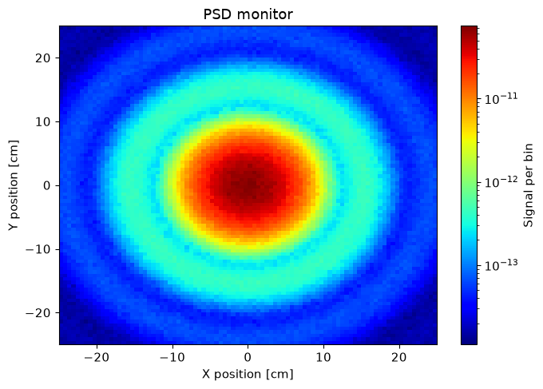

Quick start#
This section is a quick start guide that will show the basic functionality of McStasScript. It assumes the user is already familiar with McStas itself, if this is not the case, it is recommended to start with the tutorial which can serve as an introduction to both McStas and McStasScript.
Importing the package#
McStasScript needs to be imported into the users python environment.
import mcstasscript as ms
Creating the first instrument object#
Now the package can be used. Start with creating a new instrument, just needs a name. For a McXtrace instrument use McXtrace_instr instead.
instrument = ms.McStas_instr("first_instrument")
Finding a component#
The instrument object loads the available McStas components, so it can show these in order to help the user.
instrument.available_components()
Here are the available component categories:
contrib
misc
monitors
obsolete
optics
samples
sasmodels
sources
union
Call available_components(category_name) to display
instrument.available_components("sources")
Here are all components in the sources category.
Adapt_check Monitor_Optimizer Source_adapt Source_simple
ESS_butterfly Source_4PI Source_div
ESS_moderator Source_Maxwell_3 Source_div_quasi
Moderator Source_Optimizer Source_gen
Adding the first component#
McStas components can be added to the instrument, here we add a source and ask for help on the parameters.
source = instrument.add_component("source", "Source_simple")
source.show_parameters()
___ Help Source_simple _____________________________________________________________
|optional parameter|required parameter|default value|user specified value|
radius = 0.1 [m] // Radius of circle in (x,y,0) plane where neutrons are
generated.
yheight = 0.0 [m] // Height of rectangle in (x,y,0) plane where neutrons are
generated.
xwidth = 0.0 [m] // Width of rectangle in (x,y,0) plane where neutrons are
generated.
dist = 0.0 [m] // Distance to target along z axis.
focus_xw = 0.045 [m] // Width of target
focus_yh = 0.12 [m] // Height of target
E0 = 0.0 [meV] // Mean energy of neutrons.
dE = 0.0 [meV] // Energy half spread of neutrons (flat or gaussian sigma).
lambda0 = 0.0 [AA] // Mean wavelength of neutrons.
dlambda = 0.0 [AA] // Wavelength half spread of neutrons.
flux = 1.0 [1/(s*cm**2*st*energy unit)] // flux per energy unit, Angs or meV if
flux=0, the source emits 1 in 4*PI whole
space.
gauss = 0.0 [1] // Gaussian (1) or Flat (0) energy/wavelength distribution
target_index = 1 [1] // relative index of component to focus at, e.g. next is
+1 this is used to compute 'dist' automatically.
-------------------------------------------------------------------------------------
Set parameters#
The parameters of the component object are adjustable directly through the attributes of the object.
source.xwidth = 0.03
source.yheight = 0.03
source.lambda0 = 3
source.dlambda = 2.2
source.dist = 5
source.focus_xw = 0.01
source.focus_yh = 0.01
print(source)
COMPONENT source = Source_simple(
yheight = 0.03, // [m]
xwidth = 0.03, // [m]
dist = 5, // [m]
focus_xw = 0.01, // [m]
focus_yh = 0.01, // [m]
lambda0 = 3, // [AA]
dlambda = 2.2 // [AA]
)
AT (0, 0, 0) ABSOLUTE
Instrument parameters#
It is possible to add instrument parameters that can be adjusted when running the simulation or adjusted using the widget interface.
wavelength = instrument.add_parameter("wavelength", value=3, comment="Wavelength in AA")
source.lambda0 = wavelength
source.dlambda = "0.1*wavelength"
print(source)
COMPONENT source = Source_simple(
yheight = 0.03, // [m]
xwidth = 0.03, // [m]
dist = 5, // [m]
focus_xw = 0.01, // [m]
focus_yh = 0.01, // [m]
lambda0 = wavelength, // [AA]
dlambda = 0.1*wavelength // [AA]
)
AT (0, 0, 0) ABSOLUTE
Inserting a sample component#
A sample component is added as any other component, but here we place it relative to the source. A SANS sample is used, it focuses to a detector (chosen with target_index) with a width of focus_xw and height of focus_yh.
sample = instrument.add_component("sans_sample", "Sans_spheres")
sample.set_AT(5, RELATIVE=source)
sample.set_parameters(R=120, xwidth=0.01, yheight=0.01, zdepth=0.01,
target_index=1, focus_xw=0.5, focus_yh=0.5)
print(sample)
COMPONENT sans_sample = Sans_spheres(
R = 120, // [AA]
xwidth = 0.01, // [m]
yheight = 0.01, // [m]
zdepth = 0.01, // [m]
target_index = 1, // [1]
focus_xw = 0.5, // [m]
focus_yh = 0.5 // [m]
)
AT (0, 0, 5) RELATIVE source
Adding a monitor#
The monitor can be placed relative to the sample, and even use the attributes from the sample to define its size so that the two always match. When setting a filename, it has to be a string also in the generated code, so use double quotation marks as shown here.
PSD = instrument.add_component("PSD", "PSD_monitor")
PSD.set_AT([0, 0, 5], RELATIVE=sample)
PSD.set_parameters(xwidth=sample.focus_xw, yheight=sample.focus_yh, filename='"PSD.dat"')
Setting up the simulation#
The instrument now contains a source, a sample and a monitor, this is enough for a simple demonstration.
instrument.show_parameters()
wavelength = 3 // Wavelength in AA
instrument.set_parameters(wavelength=4)
instrument.settings(ncount=2E6)
Performing the simulation#
In order to start the simulation the backengine method is called. If the simulation is successful, the data will be returned, otherwise the method returns None.
data = instrument.backengine()
INFO: Using directory: "/home/runner/work/McStasScript/McStasScript/docs/source/getting_started/first_instrument"
INFO: Regenerating c-file: first_instrument.c
CFLAGS=
-----------------------------------------------------------
Generating single GPU kernel or single CPU section layout:
-----------------------------------------------------------
Generating GPU/CPU -DFUNNEL layout:
-----------------------------------------------------------
INFO: Recompiling: ./first_instrument.out
INFO: ===
*** TRACE end ***
Detector: PSD_I=2.35488e-08 PSD_ERR=6.04204e-11 PSD_N=1.99995e+06 "PSD.dat"
INFO: Placing instr file copy first_instrument.instr in dataset /home/runner/work/McStasScript/McStasScript/docs/source/getting_started/first_instrument
INFO: Placing generated c-code copy first_instrument.c in dataset /home/runner/work/McStasScript/McStasScript/docs/source/getting_started/first_instrument
Plot the data#
The data can be plotted with the make_sub_plot function from the plotter module.
ms.make_sub_plot(data, log=True)

Access the data#
The data is a list of McStasData objects and can be accessed directly.
print(data)
[
McStasData: PSD type: 2D I:2.35488e-08 E:6.04204e-11 N:1999950.0]
It is possible to search through the data list with the name_search function to retrieve the desired data object.
PSD_data = ms.name_search("PSD", data)
The intensities can then be accessed directly, along with Error and Ncount.
PSD_data.Intensity
array([[1.45164943e-14, 1.39572235e-14, 1.37978322e-14, ...,
1.34763741e-14, 1.45562491e-14, 1.55686533e-14],
[1.32229891e-14, 1.46157276e-14, 1.65000423e-14, ...,
1.53027685e-14, 1.47244952e-14, 1.64267976e-14],
[1.59065185e-14, 1.49483987e-14, 1.67025634e-14, ...,
1.59995325e-14, 1.72591267e-14, 1.42950494e-14],
...,
[1.59414891e-14, 1.58924045e-14, 1.78494882e-14, ...,
1.80501964e-14, 1.64411607e-14, 1.37916054e-14],
[1.63042070e-14, 1.52448313e-14, 1.54666692e-14, ...,
1.50270781e-14, 1.57588377e-14, 1.49557617e-14],
[1.26531727e-14, 1.50322197e-14, 1.27239828e-14, ...,
1.70038476e-14, 1.44777247e-14, 1.19976038e-14]], shape=(90, 90))
Metadata is also available as a dict.
info_dict = PSD_data.metadata.info
for field, info in info_dict.items():
print(field, ":", info)
Date : Fri Jul 24 13:53:59 2026 (1784901239)
type : array_2d(90, 90)
Source : first_instrument (first_instrument.instr)
component : PSD
position : 0 0 10
title : PSD monitor
Ncount : 2000000
filename : PSD.dat
statistics : X0=-0.0032512; dX=4.46361; Y0=-0.0136383; dY=4.46677;
signal : Min=1.11237e-14; Max=7.47284e-11; Mean=2.90726e-12;
values : 2.35488e-08 6.04204e-11 1.99995e+06
xvar : X
yvar : Y
xlabel : X position [cm]
ylabel : Y position [cm]
zvar : I
zlabel : Signal per bin
xylimits : -25 25 -25 25
variables : I I_err N
Parameters : {'wavelength': 4.0}